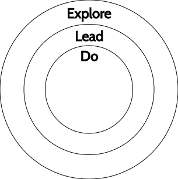
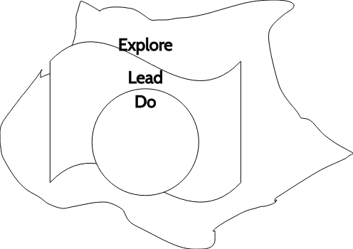

When talking about progression in any discipline, I've come to believe that there are three main stages:
One way to think about this is as three concentric circles:
However, a more realistic way of visualizing is this:
Here, we can more clearly see:
I've used this model to guide lots of career conversations (including my own!), in particular for software engineers. Even if that's not what you do, you can certainly use the same framework (if you do, drop me a line, I'd love to help you apply it, and/or hear about how it worked - or didn't - for you).
Let's take an example from the software industry:
| Stage | Software Engineer Level | How it looks like |
|---|---|---|
| Do | Trainee-New Grad-Junior |
Input: "We need users to authenticate into our site. They'll use one-time tokens that are generated on-demand, sent to their emails, and expire in 5 minutes. Tokens are generated with the X algorithm, and stored in Y. Users can request Z tokens in a T period, and then have a S cooldown period"
Output: "Code, test, get reviews, deploy" |
| Lead | Semi Senior-Senior |
Input: "We need users to authenticate on our site. We are thinking about one-time login tokens (a common pattern, with relatively well known pros and cons), but are open to other options that provide similar friction/security trade-offs"
Output: "Research one-time login token solutions, compare with alternatives, propose a solution, and either ‘Do’, or guide someone" Output: "Code, test, get reviews, deploy" |
| Explore | Staff-Principal |
Input: Hard-hitting reality
Output: "We have this site that contains private data, and users want to access it... we want to keep a good balance between security and friction/ease of use. Alice is ready to tackle a project on her own from end to end; I wonder if she'd be interested in implementing a one-time token solution or find a better alternative. Maybe she can even get some help from Bob, who just joined us back after his internship last summer"* |
* Note that the “Explore” example takes many things into account: from the problem to solve (authentication), success criteria (security vs ease of use), and team dynamics (Alice, Bob). Depending on team composition, there might be more or less interaction with an Engineering Manager; I think that at this level you always need to have a good grasp of your teammates’ skills, but not necessarily know the ins and outs of staffing, scheduling, etc.
You could also apply this to other areas of the human experience (and certainly find better examples than mine, as you probably need to be at the "Explore" level to do an analysis like this). Take, for example, cooking:
| Stage | How it looks like |
|---|---|
| Do |
Input: "This is a recipe for pizza. Take these ingredients, follow these steps, enjoy".
Output: A good pizza! 🍕 |
| Lead |
Input: "Hey, these are some ingredients in your fridge/pantry, you've obviously eaten food in the past, and I'm hungry!"
Output: "I know that tomato and basil is always a good pairing, and maybe I can add some garlic so it has a spicy kick... I could experiment with whole-wheat flour this time!”... And then a good Margherita pizza 🍕 |
| Explore |
Input: Hard-hitting reality (and gluttony!).
Output: "Mhhhh... I love blue cheese, but I'd like something that feels fresher today. Pears go really well with strong cheeses... what would happen with peaches... or strawberries?"... And then a (hopefully great) new pizza style 🍕 |